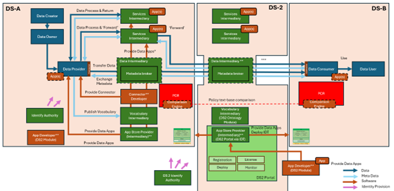
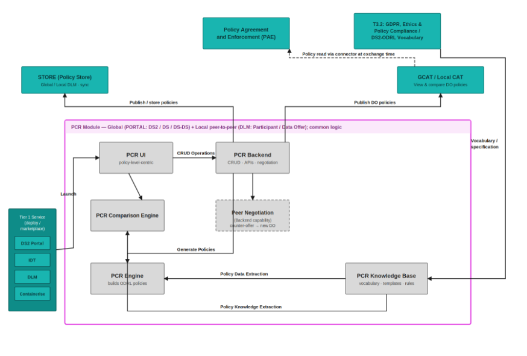

PCR - Policy Creation
Powered by
| Project Links |
|---|
| Software GitHub Repository https://github.com/ds2-eu/pcr.git |
| Progress GitHub Project https://github.com/ds2-eu/PCR/issues |
General Description
The PCR module provides a user-friendly solution for Data Space authorities to create, manage, compare, and negotiate data access policies across or within Dataspaces. It is implemented as global and local deployments: global PCR supports policy creation and comparison for DS/DS-DS policies; local PCR adds negotiation for Participant and DataOffer policies, including peer-to-peer negotiation between installations. Built on ODRL, it uses guided UI wizards for authoring and a structured comparison API for compatibility checks. Policies are stored as JSON-LD in DLM (global or local repositories, by policy level), with MongoDB holding workflow projections; negotiation sessions, revisions, and agreements are implemented end to end. Integrations with DS2 modules are supported via the PCR API.
Architecture
The figure below represents the module fit into the DS-DS environment.

The figure below represents the actors, internal structure, primary sub-components, primary DS2 module interfaces, and primary other interfaces of the module.

Component Definition
This module has the following subcomponents and other functions:
- PCR UI: Vue 3 + Vite frontend (PrimeVue, Pinia, TanStack Vue Query) for creating, discovering, comparing, and negotiating policies. Includes a multi-step policy builder (from scratch or template), negotiations inbox, comparison view, agreements list, and a public read-only policy preview route (/preview/policy). Static assets are served by NGINX, which reverse-proxies /api/* to the PCR backend.
-
PCR Backend: FastAPI service that exposes the PCR API to the UI and other DS2 components. Stores negotiation/workflow projections in MongoDB and persists JSON-LD policy versions in configured DLM repositories (global/local), with routing by
policyLevel(Participant/DataOffer→ local;DS/DS2/DS-DS→ global). Supports global and local deployment modes plus optional read-only operation. -
Policy Builder / Vocabulary Catalog: Imports ODRL/DPV/DS2 vocabulary and curated builder artifacts into MongoDB. Powers the UI wizards/forms (schema, templates, compatibility metadata). Auto-seeds on API startup when the catalog is empty (
POLICY_VOCAB_AUTO_SEED_ON_STARTUP=trueby default). -
Negotiation & Comparison: Implements negotiation sessions, revision chains, turn-taking, peer/cross-deployment negotiations (
/peer/negotiations), and a comparison engine (/comparison/pair,/comparison/batch). Supports policy discovery/search, preview routing for compatibility checks, LCAT negotiation sync, and IDM collaboration callbacks after terminal decisions. -
PCR Knowledge Base: A repository of structured rules, policy templates, and attributes needed during the policy creation, comparison, and negotiation processes.
Screenshots

PCR dashboard showing the main entry points for policy creation, discovery, negotiation, comparison, and agreement review.

Guided PCR Policy Builder for creating DS2 policies through structured, non-technical forms.

PCR policy detail view showing policy metadata, lifecycle status, policy-level information, and generated ODRL/JSON-LD content.

PCR comparison view showing differences between policies to support transparent policy review and negotiation.
Commercial Information
| Organisation (s) | License Nature | License |
|---|---|---|
| ATC | Open Source | Apache 2.0 |
Top Features
- User-Friendly Policy Creation: Guided policy builder with templates or from-scratch authoring for dataspace administrators.
- ODRL-Compliant JSON-LD Output: Policies stored in DLM as JSON-LD with lifecycle management (draft, publish, archive, deprecate, new-version).
- Policy Comparison: Pair and batch comparison of policies with structured diff output via the comparison engine and UI.
- Negotiation Workflows: Full negotiation lifecycle (start, counter, accept, reject, cancel) with inbox, revision history, and peer/cross-deployment support.
- Agreements Management: View and manage final
odrl:Agreementdocuments produced from accepted negotiations. - Public Policy Preview: Read-only preview route for catalog/LCAT/peer policies without login (when enabled by deployment mode).
- Integration with DS2 Modules: Export to PAE via API; LCAT negotiation sync; IDM collaboration callbacks on accept/reject.
- Cross-Dataspace Discovery: Discover and compare published, discoverable policies across catalogue organisations.
- Modular Architecture: Global/local deployment modes, read-only mode, and extendable vocabulary catalog profiles.
- Support for Standard and Custom Attributes: Predefined ODRL/DPV fields with curated DS2 builder overlays and template library.
How To Install
Requirements
Following are the Hardware Requirements for PCR - CPU: 2 vCPUs
-
RAM: 8 GB
-
Storage: 10 GB SSD (expandable depending on ledger size and log retention)
-
OS: Ubuntu 22.04 LTS or equivalent
Software
- PCR Backend: Python 3.10+ (Docker image uses 3.12), FastAPI, MongoDB 8.0+ for workflow projections, DLM repositories for JSON-LD policy versions, Keycloak JWT (or trusted gateway) for authentication
- PCR UI: Node.js 20+ with
pnpm9+ (Vue 3 + Vite + PrimeVue 4), delivered as static assets served by NGINX - Additional Tools: Git, Docker and Docker Compose (for standalone installation)
DS2 Installation
PCR is deployed on the DS2 platform via the Helm chart under charts/pcr/. The chart provisions three components: pcrbackend, pcrfrontend, and pcrdb (MongoDB).
- Configure environment variables in
charts/pcr/values.yamlunder each component'sconfigblock. - Deploy through the DS2 Helm/Flux pipeline (HelmRelease templates in
charts/pcr/templates/). - Verify the deployment: UI ingress, API health (
GET /health), and Swagger UI at/docs.
Backend (pcrbackend.config)
| Variable | Purpose |
|---|---|
PCR_DEPLOYMENT_MODE |
global or local |
PCR_READ_ONLY_MODE |
Disable write routes when true |
HOST / PORT |
API bind address and port |
MONGODB_URL |
MongoDB connection URI (in-cluster service) |
MONGODB_DATABASE |
Database name for projections and catalog |
MONGODB_USERNAME / MONGODB_PASSWORD / MONGODB_AUTH_SOURCE |
MongoDB authentication |
DLM_STORE_GLOBAL_BASE_URL / DLM_STORE_GLOBAL_API_KEY |
Global DLM repository |
DLM_STORE_LOCAL_BASE_URL / DLM_STORE_LOCAL_API_KEY |
Local DLM store (local deployments) |
GLOBAL_PCR_BASE_URL / SOURCE_PCR_BASE_URL |
Public PCR API URLs for routing and preview |
PROJECTION_SYNC_OWNER_NAMES |
Catalogue orgs for projection sync fan-out |
IDM_COLLABORATION_CALLBACK_ENABLED |
Notify IDM on negotiation accept/reject |
IDM_COLLABORATION_BASE_URL |
IDM collaboration API base URL |
IDM_COLLABORATION_FAIL_CLOSED |
Fail closed on IDM callback errors |
Frontend (pcrfrontend.config)
| Variable | Purpose |
|---|---|
NGINX_API_PROXY_PASS |
In-cluster PCR API URL for /api/* proxy |
VITE_API_BASE_URL_DEV / VITE_API_BASE_URL_PROD |
API base path (keep /api) |
VITE_PCR_DEPLOYMENT_MODE |
Must match backend PCR_DEPLOYMENT_MODE |
VITE_PCR_READ_ONLY_MODE |
Must match backend PCR_READ_ONLY_MODE |
Database (pcrdb.config)
| Variable | Purpose |
|---|---|
MONGO_INITDB_ROOT_USERNAME / MONGO_INITDB_ROOT_PASSWORD |
MongoDB root credentials |
The repository root .env.example lists the same minimal variable set used for Docker Compose and can be used as a reference when filling in chart values.
Standalone Installation
Summary of installation steps
- Clone the repository (includes
ilab-ds2-pcr-beandilab-ds2-pcr-ui) - Configure environment variables:
cp .env.example .env - Start the full stack:
docker compose up --build -d - Open the UI at
http://localhost:8080and the API athttp://localhost:8010(Swagger at/docs) - (Optional) Re-run vocabulary seeding if the catalog needs refresh - the API also auto-seeds on startup when empty
Detailed steps
1. Configure environment
Copy .env.example to .env at the repository root. Key variables:
| Variable | Purpose |
|---|---|
PCR_DEPLOYMENT_MODE |
global or local |
MONGODB_URL / MONGODB_DATABASE |
MongoDB connection |
DLM_STORE_GLOBAL_BASE_URL / DLM_STORE_GLOBAL_API_KEY |
Global DLM repository |
DLM_STORE_LOCAL_BASE_URL / DLM_STORE_LOCAL_API_KEY |
Local DLM store |
GLOBAL_PCR_BASE_URL / SOURCE_PCR_BASE_URL |
PCR API URLs |
CORS_ORIGINS / CORS_ALLOW_CREDENTIALS |
Allowed UI origins |
NGINX_API_PROXY_PASS |
Backend URL for UI proxy (http://pcr-global:8010 in compose) |
VITE_PCR_DEPLOYMENT_MODE / VITE_PCR_READ_ONLY_MODE |
UI deployment flags |
Component-specific templates: ilab-ds2-pcr-be/.env.api.global_readonly_1.minimal and ilab-ds2-pcr-ui/.env.ui.global_readonly_1.
2. Start with Docker Compose (global stack)
From the repository root:
Services (docker-compose.yml):
| Service | Port | Role |
|---|---|---|
mongo-global |
27019 (host) | MongoDB |
seed-global |
- | One-off vocabulary seed |
pcr-global |
8010 | PCR API |
pcr-ui-global |
8080 | PCR UI (NGINX) |
3. Other standalone topologies
- Backend only (
ilab-ds2-pcr-be/docker-compose.yml): MongoDB + API on port 8010 - 3-node local (
ilab-ds2-pcr-be/docker-compose.local.yml):pcr-global(8010),pcr-idta(8011),pcr-idtb(8012) - UI only (
ilab-ds2-pcr-ui/docker-compose.yml): setNGINX_API_PROXY_PASSto your API endpoint
4. Manual development (without Docker)
Backend:
cd ilab-ds2-pcr-be
python -m venv .venv
source .venv/bin/activate # Windows: .venv\Scripts\activate
pip install -r requirements.txt
cp .env.minimal .env
uvicorn app.main:app --reload --host 0.0.0.0 --port 8010
UI:
5. Database seeding
The policy vocabulary catalog auto-seeds on API startup when empty. To seed manually:
docker compose exec pcr-global python -m app.jobs.seed_policy_vocab --profile ds2-core --mode upsert
What gets seeded, in order: DPV vocabulary, ODRL entities, DS2 builder catalog values, policy templates, and import locks/indexes.
For the 3-node topology, run the same command against pcr-global, pcr-idta, and pcr-idtb. For a manual install, run from ilab-ds2-pcr-be:
6. Verify installation
- API health:
GET http://localhost:8010/health - Swagger UI:
http://localhost:8010/docs - Policy builder catalog:
GET http://localhost:8010/policy-builder/status - UI:
http://localhost:8080
How To Use
PCR is implemented and operational via the UI and API. Authenticate with a Keycloak JWT (Bearer token) unless using a public preview route or a read-only deployment.
Global vs local usage
| Deployment | Typical users | Implemented capabilities |
|---|---|---|
| Global PCR | DS operators | Create and manage DS/DS-DS policies, discover policies, compare compatibility |
| Local PCR | Participants | Create Participant/DataOffer policies, compare, run negotiation workflows (inbox, counter-proposals, agreements), peer negotiation between installations |
Common workflows
Create and publish a policy (UI)
1. Sign in and open Policies → Create (/policies/create).
2. Choose a template or start from scratch; complete the builder wizard (parties, permissions, duties, review).
3. Save as draft, then publish from the policy details view when ready.
4. Published policies are stored as JSON-LD in DLM; only the owning organisation can edit drafts.
Discover and compare policies (UI)
1. Open Policies → Discover (/policies/discover) to browse published, discoverable policies.
2. Open Compare (/comparison) to run pair or batch comparison against your policies or external sources.
3. Review structured compatibility results (matches, conflicts, severity).
Negotiate a policy (local PCR, UI)
1. Start a negotiation from a policy details page or via the negotiation API (POST /negotiations).
2. Track sessions in Negotiations → Inbox (/negotiations/inbox).
3. Submit counter-proposals, then accept, reject, or cancel according to turn-taking rules.
4. View the resulting agreement under Agreements (/agreements) after acceptance.
Integrate via API (PAE, GCAT, LCAT, other DS2 modules)
1. Obtain a JWT with the caller organisation context.
2. Call comparison endpoints (POST /comparison/pair, POST /comparison/batch) for enforcement or catalog checks.
3. Use policy lifecycle endpoints (/policies/*) for authoring and discovery (/policies/discover).
4. Use negotiation endpoints (/negotiations/*, /peer/negotiations) for local-to-local workflows.
5. Use GET /integrations/policies/preview for read-only policy preview from external systems.
Using the PCR UI
The PCR UI provides an interface for: - Creating policies from templates or from scratch (multi-step builder wizard) - Managing your organisation's policies (draft, publish, archive, deprecate, new version) - Discovering policies across dataspaces - Comparing policies (pair and batch comparison view) - Negotiating policies (inbox, details, counter-proposals, agreements) - Viewing final agreements - Public read-only policy preview (no login required on global/local deployments when enabled)
When using the default docker-compose.yml, access the UI at http://localhost:8080 and the API at http://localhost:8010. The UI reverse-proxies API calls under /api/* to the PCR backend.
Key UI routes
| Route | Purpose |
|---|---|
/policies/my |
Your organisation's policies |
/policies/discover |
Cross-dataspace policy discovery |
/policies/create |
Policy creation entry (template or scratch) |
/negotiations/inbox |
Negotiation inbox |
/comparison |
Policy comparison |
/agreements |
Final agreements list |
/preview/policy |
Public read-only policy preview (alias: /policies/catView) |
Public preview accepts one lookup parameter (priority: recordId → sourcePolicyId → dataOfferId → policyUrl / url). Optional remoteApiBaseUrl fetches preview from a peer PCR API.
Using the API
Use Swagger UI at http://localhost:8010/docs (update the port if configured differently).
Authentication: Keycloak-issued JWT (Bearer), or trusted gateway mode in production.
Primary operations
- Policy drafts and lifecycle: /policies/* (create, update, publish, archive, deprecate, new-version)
- Discovery and search: GET /policies/search, GET /policies/discover
- Policy builder catalog: /policy-builder/*
- Negotiations: /negotiations/* (start, counter, accept, reject, cancel, inbox)
- Peer negotiations: /peer/negotiations
- Comparison: POST /comparison/pair, POST /comparison/batch
- Agreements: /agreements/*
- Integrations: /integrations/policies/preview, LCAT negotiation start
- Runtime config: GET /runtime/config
Other Information
API Endpoints
For a complete list of available API endpoints, use Swagger/OpenAPI at /docs and openapi.json. Primary route groups:
| Prefix | Purpose |
|---|---|
/health |
Liveness check |
/policies |
Policy CRUD, lifecycle, search, discover |
/policy-builder |
Builder catalog status and wizard metadata |
/policy-vocab |
Vocabulary export for partner integrations |
/negotiations |
Negotiation sessions, revisions, inbox |
/peer/negotiations |
Cross-deployment peer negotiation |
/comparison |
Pair and batch policy comparison |
/agreements |
Final agreement documents |
/integrations/policies |
Preview, LCAT negotiation start, remote cache |
/runtime |
Deployment mode and runtime configuration |
/admin/projections |
DLM→Mongo projection sync |
/admin/policy-vocab |
Vocabulary catalog administration |
/admin/policy-builder |
Builder catalog administration |
Standards Compliance
PCR Engine is built on W3C standards: - ODRL 2.2: W3C Recommendation for expressing permissions and restrictions - DPV 2.2: W3C Community Group specification for data privacy - RDF/SPARQL: Core semantic web technologies - JSON-LD 1.1: JSON-based RDF serialization
These standards are reflected in the generated ODRL/DPV JSON-LD and policy templates.
Troubleshooting
- UI loads but API fails: verify
NGINX_API_PROXY_PASSand that the backend is reachable from the UI container/pod. - 502/503 from UI
/api/*: check upstream host/port and TLS scheme (httpvshttps). Inspect rendered NGINX config:cat /etc/nginx/conf.d/default.confinside the UI container. - Backend health is degraded: validate
MONGODB_URL/MONGODB_DATABASEconnectivity (and credentials, if enabled). - Policy builder errors / empty catalog: confirm auto-seed ran on startup or re-run the seed job (
python -m app.jobs.seed_policy_vocab --profile ds2-core --mode upsert). CheckGET /policy-builder/status. - Authentication errors: confirm JWT issuer/audience or JWKS configuration (
JWT_VERIFY_SIGNATURE,KEYCLOAK_JWKS_URL), or trusted gateway mode (TRUSTED_AUTH_GATEWAY=true). For local dev only:ALLOW_ORG_HEADER_FALLBACK=truewith headerX-Keycloak-Org-Name. - Negotiation turn-taking errors: only the
waitingForparty may accept, reject, or counter; caller Keycloak org must matchwaitingForOrgName. - Cross-deployment preview/negotiation fails: verify
GLOBAL_PCR_BASE_URL,SOURCE_PCR_BASE_URL, and peerremoteApiBaseUrlreachability between PCR instances.
OpenAPI Specification
The PCR backend exposes a REST API for the UI and for inter-module communication (PAE, GCAT, LCAT, IDM, and peer PCR instances). The API is implemented in FastAPI and publishes an OpenAPI 3 specification that is generated automatically from the running application - it stays aligned with the deployed code.
Access the specification
| Format | URL (standalone backend) |
|---|---|
| Swagger UI | http://localhost:8010/docs |
| ReDoc | http://localhost:8010/redoc |
| OpenAPI JSON | http://localhost:8010/openapi.json |
Replace localhost:8010 with your deployed API host and port (DS2 installation, Docker Compose BACKEND_PORT, or Helm release URL).
Authentication
Most endpoints require Authorization: Bearer <JWT> with the caller's Keycloak organisation context. Operations guarded in Swagger show the Bearer security scheme. Production deployments use JWT signature verification or a trusted API gateway.
Inter-module API surface (summary)
The OpenAPI document describes the full contract. Primary groups used by other DS2 modules:
- Policies - authoring, lifecycle, search, discover (
/policies/*) - Comparison - pair and batch compatibility checks (
/comparison/*) - Negotiations - sessions, revisions, inbox (
/negotiations/*,/peer/negotiations/*) - Agreements - final
odrl:Agreementdocuments (/agreements/*) - Integrations - policy preview and LCAT negotiation start (
/integrations/policies/*) - Policy vocabulary - partner profile export (
/policy-vocab/export)
Download openapi.json for client generation, contract testing, or integration with external tooling.
Additional Links
Documentation Resources
- PCR UI README: ilab-ds2-pcr-ui/README.md - UI deployment, public preview, and required environment variables
- PCR Backend README: ilab-ds2-pcr-be/README.md - API overview, organisation identity, negotiation, and projection sync
- Backend seed CLI: ilab-ds2-pcr-be/app/jobs/seed_policy_vocab.py - Vocabulary/catalog bootstrap
- API Documentation: http://localhost:8010/docs (Swagger UI)
- GitHub Repository: https://github.com/ds2-eu/pcr.git
- GitHub Issues: https://github.com/ds2-eu/PCR/issues
Standards and Specifications
For complete references to standards and technology documentation, see: - ODRL 2.2: https://www.w3.org/TR/odrl-model/ - DPV 2.2: https://www.w3.org/TR/dpv/ - JSON-LD 1.1: https://www.w3.org/TR/json-ld11/ - RDF/SPARQL: https://www.w3.org/RDF/ and https://www.w3.org/TR/sparql11-overview/